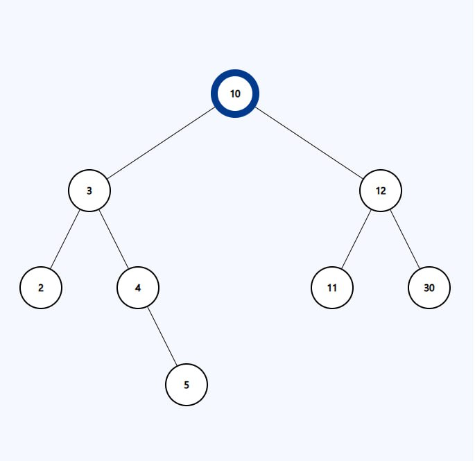

Theory
-
Бинарное дерево
Теоретическое определение бинарного дерева: Бинарное дерево - это дерево, в котором каждый узел может иметь не более двух потомков. Каждый узел содержит некоторое значение и может хранить ссылки на своих потомков - левого и правого, которые также являются бинарными деревьями.

Пример бинарного дерева:
-
Бинарное дерево имеет несколько основных операций, которые позволяют работать с ним:
Вставка – добавление нового узла в дерево. Новый узел может быть добавлен как левым, так и правым потомком существующего узла, в зависимости от условий, которые задаются при выполнении операции вставки.
Удаление – удаление узла из дерева. При удалении узла, его потомки (если они существуют) становятся потомками его родителя.
Поиск – поиск узла в дереве. Поиск может быть реализован как рекурсивным, так и итеративным способом.
Обход – обход дерева с целью выполнения определенных операций над его узлами. В зависимости от порядка обхода, результат операции может быть различным.
Бинарные деревья широко применяются в алгоритмах, таких как поиск, сортировка и обход графа. В различных задачах бинарное дерево может быть использовано для эффективного хранения и обработки данных.
Одним из наиболее часто используемых типов бинарного дерева является двоичное дерево поиска (Binary Search Tree, BST). В этом типе деревьев каждый узел содержит значение, которое является уникальным ключом для поиска и сортировки элементов. Узлы в BST располагаются таким образом, чтобы ключи слева от узла были меньше его значения, а справа – больше.
Бинарные деревья являются эффективными структурами данных, так как время выполнения операций (вставка, удаление, поиск) в них обычно пропорционально высоте дерева, а не числу узлов. Однако, в худшем случае, дерево может быть несбалансированным и иметь высоту, равную числу узлов, что может существенно снизить эффективность операций. В заключении, бинарное дерево – это важная структура данных, которая находит применение во многих областях программирования и алгоритмов. Знание работы с ним позволяет разработчикам эффективно решать различные задачи, связанные с хранением и обработкой данных.